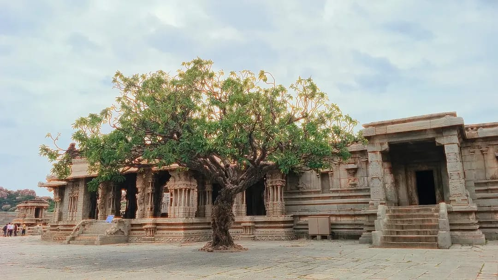

◉ STATUS
Online, making things
◉ STATUS
☁ WEATHER
28°CHyderabad · Partly cloudy
⌘ A SMALL CORNER
♫ CURRENTLY LISTENING
▤ LATEST NOTE
A personal collection of experiments, thoughts and little discoveries.
Read more →▧ PHOTOS / 05
 See the gallery →
See the gallery →@ FIND ME
THE JOURNAL
A place for future writing and experiments.
THE GALLERY
RIGHT NOW
Learning engineering, exploring design, and collecting moments.